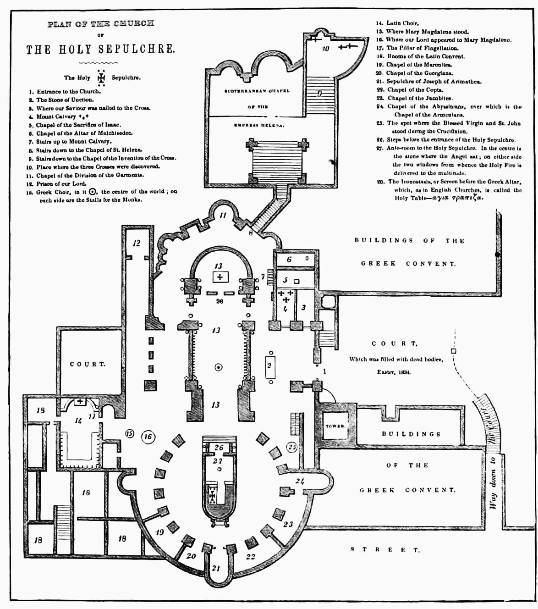

Plan of the church of the The Holy Sepulchre. 
| The Holy Sepulchre. | |||
| 1. | Entrance to the Church. | 15. | Where Mary Magdalene stood. |
| 2. | The Stone of Unction. | 16. | Where our Lord appeared to Mary Magdalene. |
| 3. | Where our Saviour was nailed to the Cross. | 17. | The Pillar of Flagellation. |
| 4. | Mount Calvary | 18. | Rooms of the Latin Convent. |
| 5. | Chapel of the Sacrifice of Isaac. | 19. | Chapel of the Maronites. |
| 6. | Chapel of the Altar of Melchisedec. | 20. | Chapel of the Georgians. |
| 7. | Stairs up to Mount Calvary. | 21. | Sepulchre of Joseph of Arimathea. |
| 8. | Stairs down to the Chapel of St. Helena. | 22. | Chapel of the Copts. |
| 9. | Stairs down to the Chapel of the Invention of the Cross. | 23. | Chapel of the Jacobites. |
| 10. | Place where the three Crosses were discovered. | 24. | Chapel of the Abyssinians, over which is the Chapel of the Armenians. |
| 11. | Chapel of the Division of the Garments. | 25. | The spot where the Blessed Virgin and St. John stood during the Crucifixion. |
| 12. | Prison of our Lord. | 26. | Steps before the entrance of the Holy Sepulchre. |
| 13. | Greek Choir, in it , the center of the world; on each side are the Stalls for the Monks. | 27. | Ante-room to the Holy Sepulchre. In the center is the stone where the Angel sat; on either side the two windows from whence the Holy Fire is delivered to the multitude. |
| 14. | Latin Choir. | 28. | The Iconostasis, or Screen before the Greek Altar, which, as in English Churches, is called the Holy Table—ικονοsτασις. |